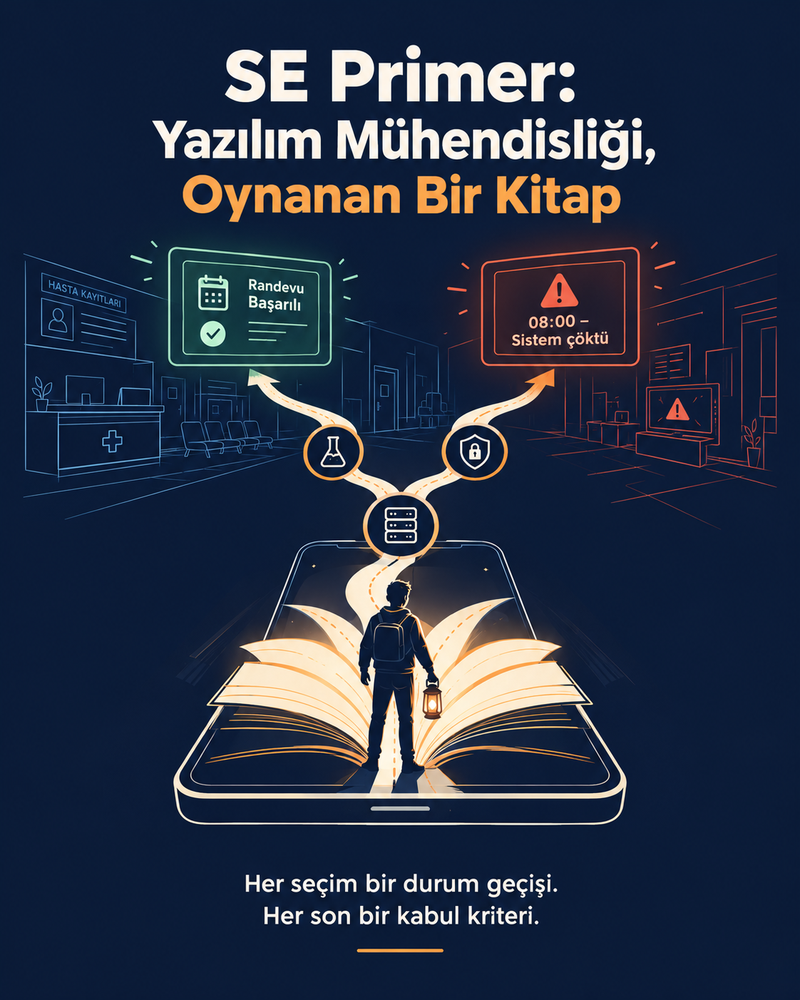
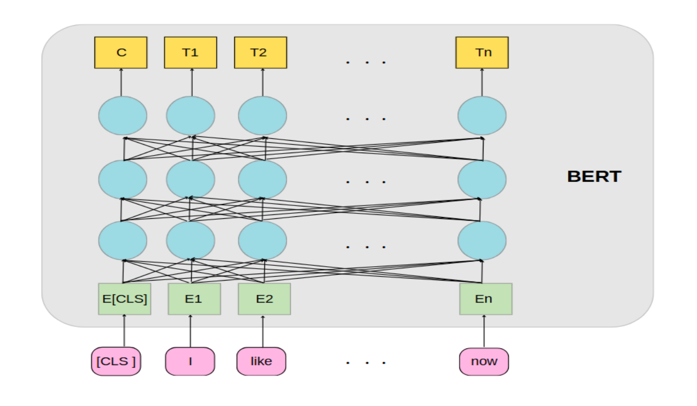
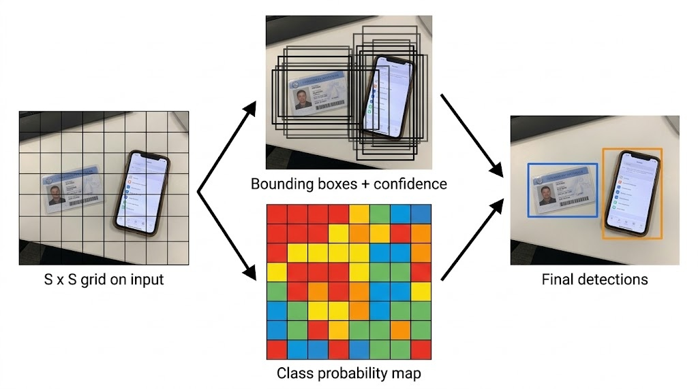
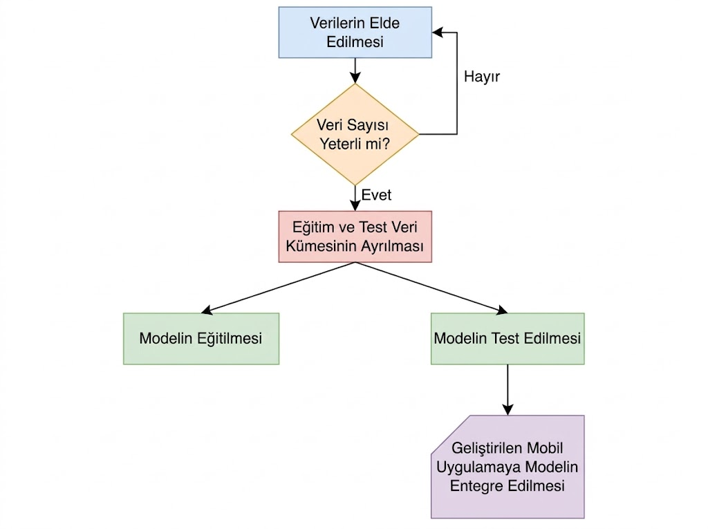
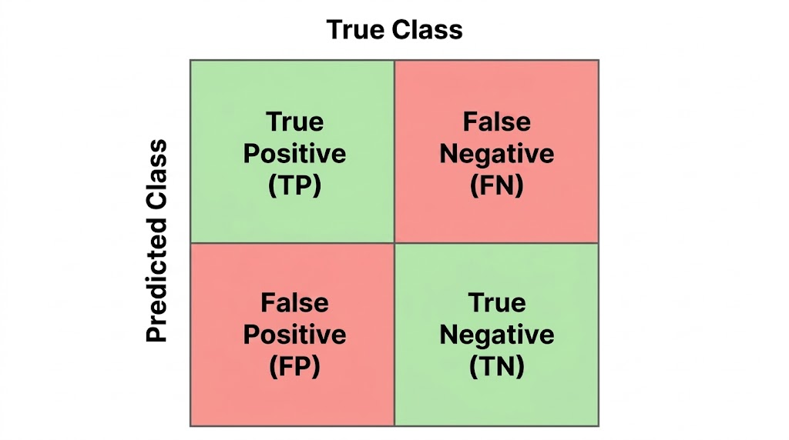

Slayt 1: Kapak & Vaka Mimarisi
Slayt 2: The Diamond Age (Neal Stephenson)

Slayt 3: BERT NLP Triyaj Mimarisi

Slayt 4: YOLO Nesne Tespiti

Slayt 5: Makine Öğrenmesi Yaşam Döngüsü

Slayt 6: Hata Matrisi (Confusion Matrix)
False Negative (FN) hayati risk taşır. Model testinde Recall değerinin %99 üstünde olması kritik kabul kriteridir.